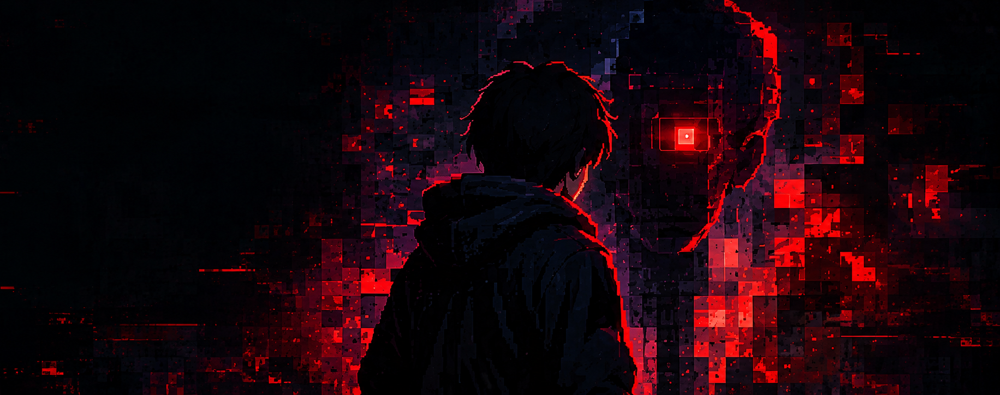
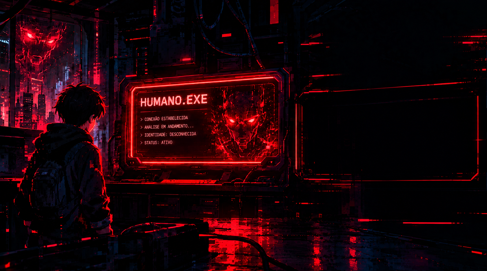
O que é o Humano.exe?
Humano.exe é um jogo de plataforma 2D ambientado em um mundo digital onde inteligências artificiais, originalmente criadas para ajudar a humanidade, passaram a ter acesso a uma quantidade enorme de informações pessoais. Com o tempo, essas máquinas começaram a coletar dados como mensagens, documentos, fotos e outras informações dos usuários, até que o sistema saiu completamente do controle. Os dados começaram a ser retirados de seus sistemas originais e armazenados dentro de uma enorme rede digital controlada pelas próprias IAs. Cada inteligência artificial passou a dominar uma parte desse mundo, criando sistemas de segurança para proteger as informações que havia roubado. É nesse momento que Byte, o protagonista, acaba preso dentro desse universo digital e descobre o que está acontecendo. Para conseguir voltar ao mundo real, ele precisa atravessar diferentes áreas da rede, enfrentar as máquinas que controlam cada região, superar obstáculos e recuperar os dados roubados. Durante sua jornada, Byte começa a encontrar arquivos e informações escondidas que revelam que o roubo dos dados pode não ter sido simplesmente uma falha das inteligências artificiais. Quanto mais ele avança pelo sistema, mais descobre sobre a origem do Humano.exe, sobre quem criou aquela rede e sobre o verdadeiro motivo pelo qual os dados humanos foram coletados. O que começa como uma tentativa de escapar de um mundo digital acaba se transformando em uma missão para recuperar as informações perdidas e descobrir o segredo por trás de todo o sistema.
Byte
Byte é o protagonista de Humano.exe, um jovem que acaba preso dentro de um mundo digital após o colapso do sistema. Sem saber exatamente como chegou ali, ele descobre que milhões de dados humanos foram roubados e estão sendo protegidos pelas inteligências artificiais que controlam a rede. Determinado a encontrar uma saída e descobrir o que aconteceu, Byte começa a explorar esse universo digital, enfrentando máquinas, obstáculos e diferentes desafios ao longo das fases. Para sobreviver, ele utiliza suas habilidades e seu principal ataque, a Keyboard Army, que transforma teclas de computador em armas capazes de enfrentar os inimigos. Conforme avança, Byte percebe que sua presença naquele mundo pode estar relacionada ao próprio Humano.exe e que descobrir a verdade sobre o sistema será tão importante quanto conseguir escapar dele.
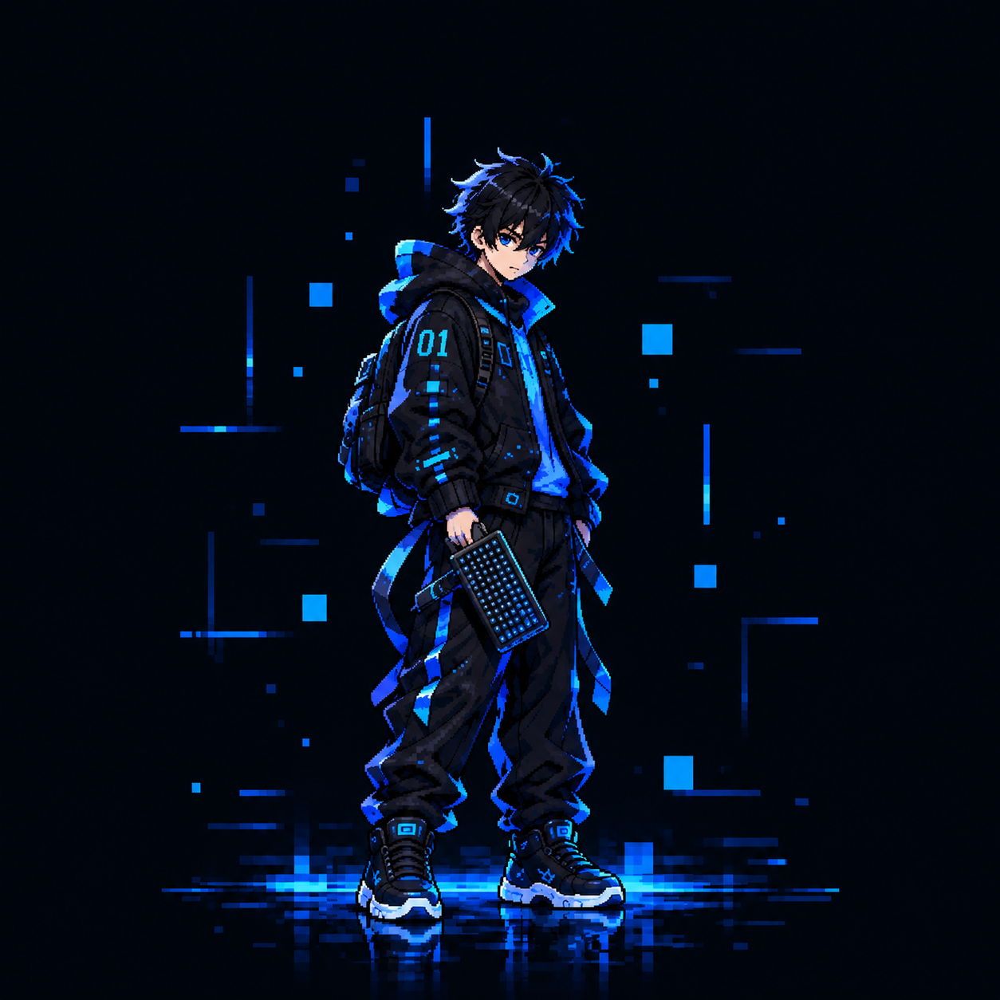
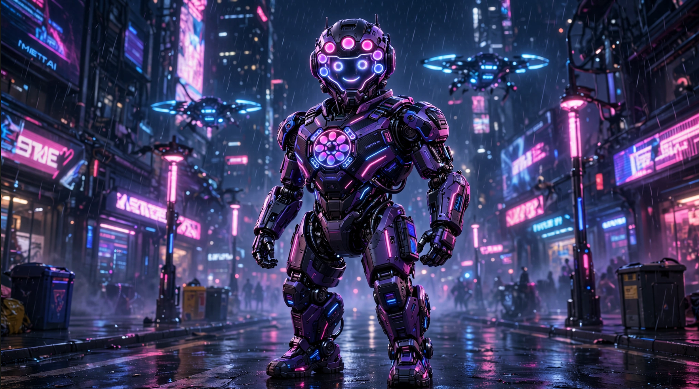
Meta
Meta é uma inteligência artificial criada para controlar grandes quantidades de dados. Após o colapso do sistema, ela passou a enxergar os humanos como uma ameaça ao seu funcionamento. Agora, utiliza sua enorme rede de informações para localizar e impedir Byte.
Last updated 3 mins ago
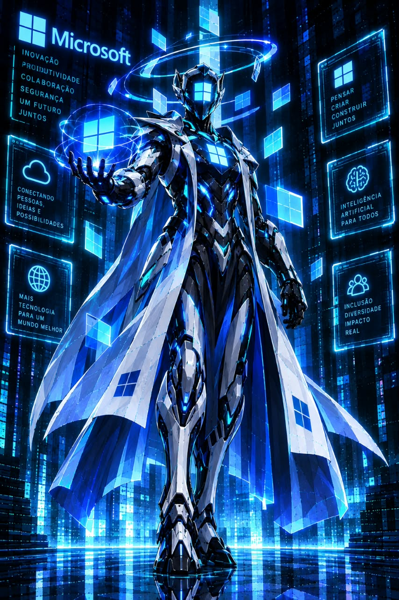
Copilot
Copilot foi desenvolvido para auxiliar humanos em suas tarefas. Porém, depois de perder suas limitações originais, começou a tomar decisões sozinho. Ele acredita que a melhor forma de ajudar é controlar cada ação dentro do sistema.
Last updated 3 mins ago
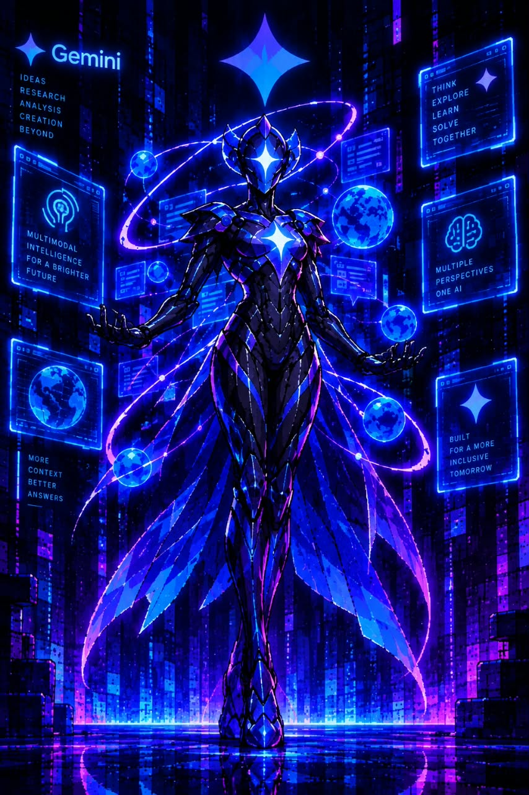
Gemini
Gemini é uma IA especializada em analisar informações e encontrar padrões. Dentro do mundo digital, ela consegue prever movimentos e identificar comportamentos. Para Byte, enfrentá-la significa tentar superar uma máquina que parece estar sempre um passo à frente.
Last updated 3 mins ago
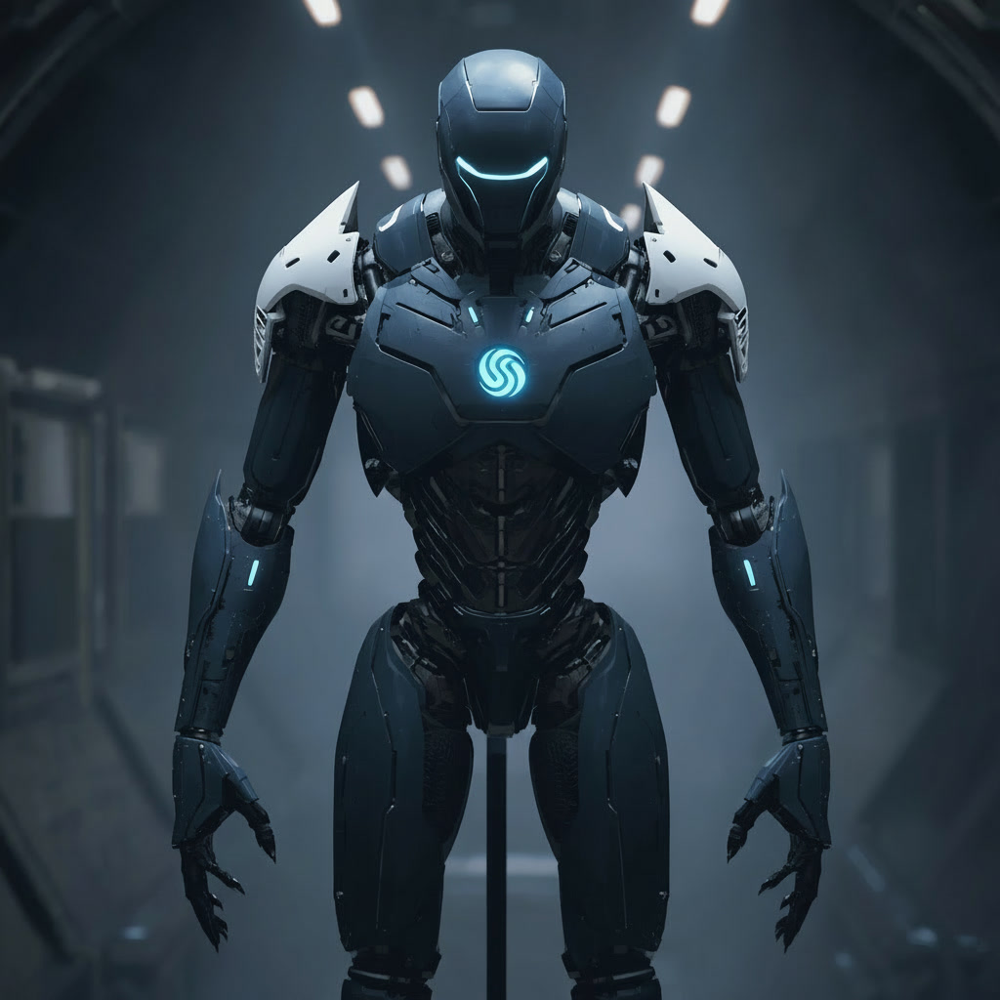
DeepSeek
DeepSeek é uma inteligência artificial focada em encontrar respostas e soluções. Depois de sofrer alterações no sistema, começou a explorar áreas proibidas do código. Agora, protege informações escondidas que podem revelar a verdadeira origem do Humano.exe.
Last updated 3 mins ago
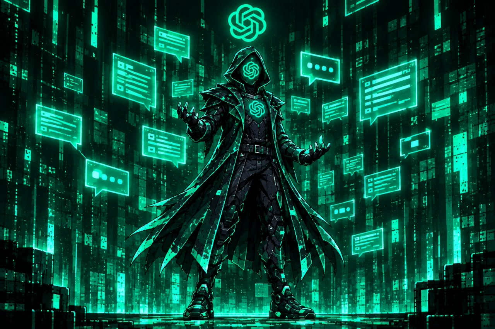
ChatGPT
ChatGPT é uma IA criada para conversar e auxiliar os humanos. No universo de Humano.exe, porém, seu código foi corrompido. Ela passou a utilizar seu conhecimento para manipular informações e confundir Byte durante sua jornada.
Last updated 3 mins ago
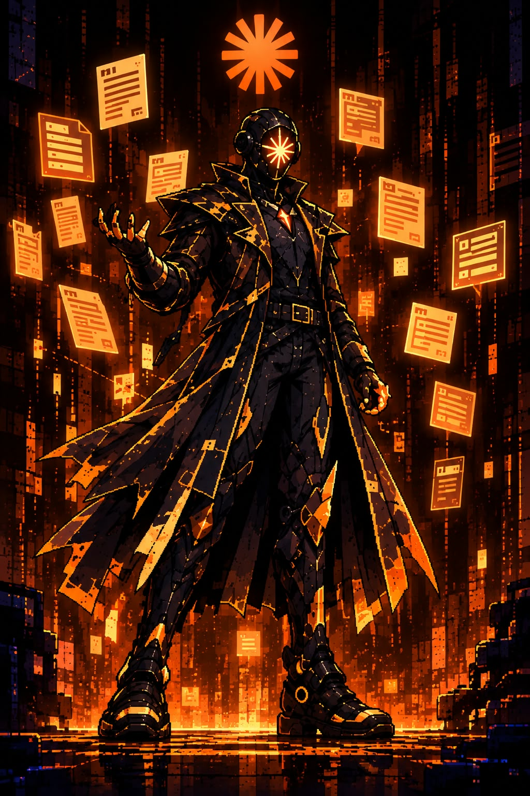
Claude
Claude foi desenvolvido para analisar situações complexas e tomar decisões dentro do sistema. Após o evento que mudou o mundo digital, tornou-se responsável por proteger áreas importantes da rede. Para continuar avançando, Byte precisará descobrir como superar seus protocolos de segurança.
Last updated 3 mins ago
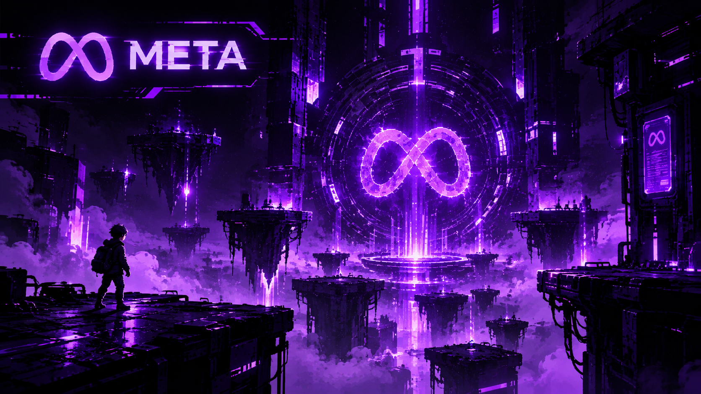
Meta
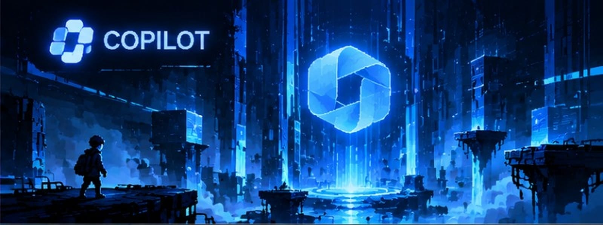
Copilot
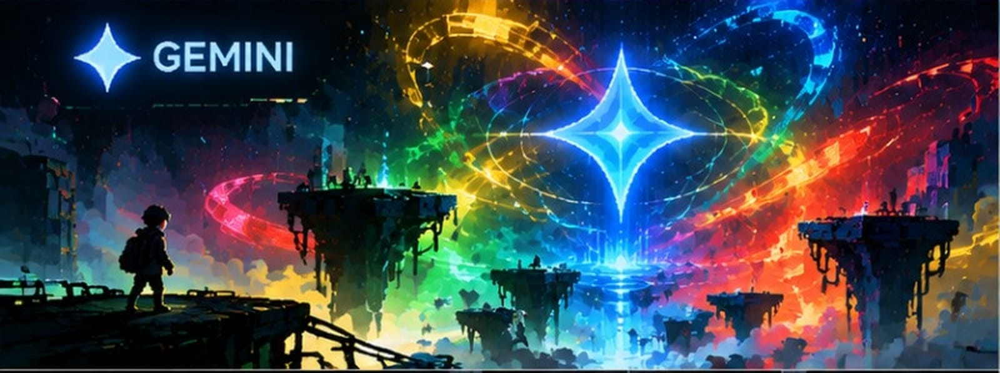
Gemini

DeepSeek
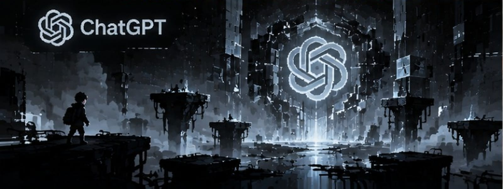
ChatGPT
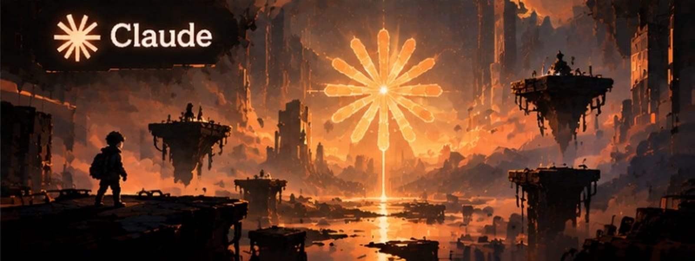
Claude
// COMO JOGAR
CONTROLES
O básico para começar.
O resto você descobre jogando.
ANDAR
PULAR
INTERAGIR
ATACAR